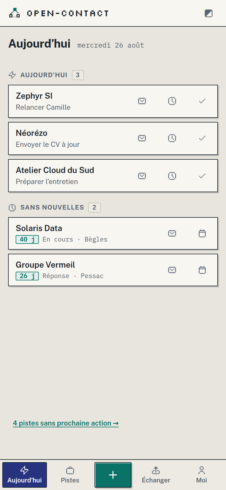
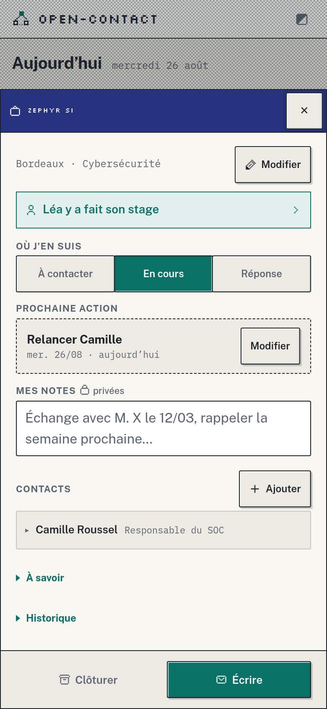
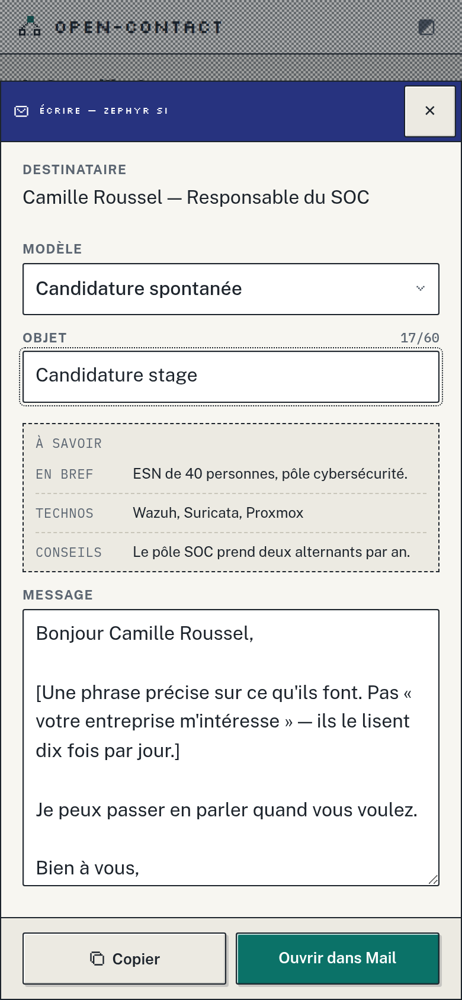

Je fais quoi maintenant ?
OpenContact range tes pistes de stage, d'alternance ou d'emploi, et te dit quoi faire ensuite. Il fait aussi circuler les bonnes pistes dans ton groupe.
Ouvrir OpenContactPas de compte. Rien à installer.
Tes données restent sur ton appareil.
Quelqu'un de ton groupe a déjà fait son stage là où tu postules. C'est le seul avantage que tu aies vraiment, et aucun outil ne le fait circuler. OpenContact, si : quand quelqu'un de ton groupe déclare « j'y suis passé », son prénom part avec la piste. L'app te propose alors d'aller lui demander de vive voix, parce qu'une demande en face aboutit 34 fois plus souvent que par e-mail.

Ce qu'il y a à faire, maintenant
Ce qui est planifié d'abord. Puis les pistes qui se taisent depuis trop longtemps : sept jours, vingt et un, quarante-cinq — les délais que donne la littérature sur la relance, pas des chiffres inventés.
Passé le dernier seuil, l'app ne te dit plus « relance encore ». Elle te propose de clore. Une pile dont chaque ligne peut sortir ne grandit pas sans fin.
Et quand rien n'est planifié, elle ne répond pas « rien à faire » : elle choisit trois pistes et dit pourquoi celles-là.

Ce que tu sais, et qui peut t'ouvrir la porte
Le statut, la prochaine action, tes notes, les contacts à qui écrire. Et tout en haut, ce qui décide vraiment : quelqu'un de ton groupe est passé par là.
Ce bandeau se tape. Il prépare le message à lui envoyer, prêt à coller là où ton groupe se parle déjà.

Le geste que personne ne peut faire à ta place
Un corps personnalisé obtient environ un tiers de réponses en plus, et une accroche nourrie de recherche sur l'entreprise fait passer les réponses de ~7 % à ~17 %. Encore faut-il avoir la matière sous les yeux : aller la chercher sur un autre écran, personne ne le fait.
Elle est donc juste au-dessus du champ. Le modèle met l'accroche personnalisée en premier, et te dit aussi ce qu'il ne faut pas écrire.
Ton groupe, sans serveur
Tu donnes tes pistes à ton groupe par QR, de pair à pair chiffré, ou
par un fichier .oc que tu passes de la main à la main. Le
fichier marche toujours : hors ligne, wifi d'établissement bloqué, ou
simplement par clé USB.
Ton suivi privé ne part jamais avec. Tes statuts, tes notes, ton journal restent chez toi — seule exception, la synchronisation entre tes propres appareils. Et recevoir des données montre toujours un aperçu avant, puis laisse une trentaine de secondes pour annuler après.
Ce qu'OpenContact ne fera jamais
- Aucun serveur OpenContact, aucun compte, aucune télémétrie. Rien à nous n'est installé nulle part. Personne ne sait que tu l'utilises, nous les premiers.
- Aucune publicité, rien à vendre. L'application est gratuite et son code est visible, pour que n'importe qui puisse vérifier ce qu'elle fait de tes données au lieu de nous croire.
- Rien ne s'écrase en silence. Toute fusion montre un aperçu avant, et tout geste lourd laisse une trentaine de secondes pour revenir en arrière.
- Rien ne se charge depuis le réseau au démarrage. Elle s'ouvre et fonctionne hors ligne, dans le train comme dans un couloir.
Ouvre-la dans ton navigateur. Sur téléphone, ajoute-la à l'écran d'accueil : elle s'ouvrira comme une vraie application.
Ouvrir OpenContact